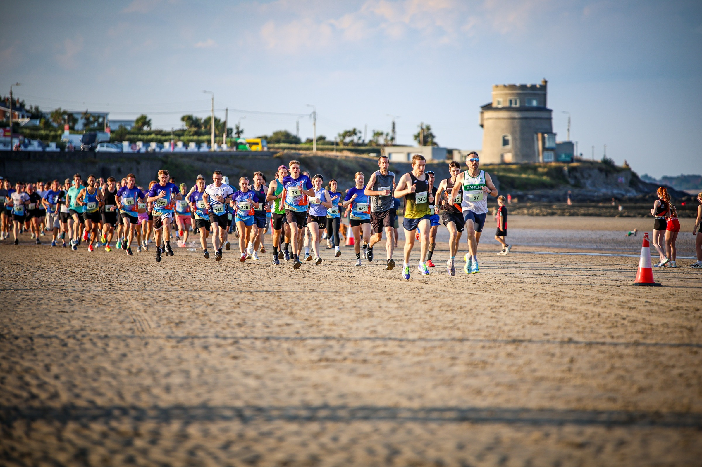
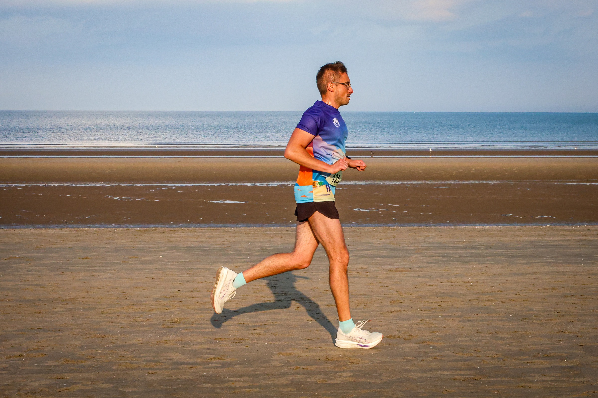

Anthony Eames and Rebekka Prim took the headline honours at the Portmarnock AC Beach 5K on Friday evening, 28 August, as hundreds of runners crossed the Velvet Strand in County Dublin.
The official results place Eames of Raheny Shamrock A.C. first in 16:42, with Eoin Keating of Clonliffe Harriers A.C. recording the same net and gross time in second. Darragh Ward completed the men’s podium in 17:18.

Prim leads the women’s field
Prim finished ninth overall and first woman in 19:13. Annette Kealy of Raheny Shamrock A.C. followed in 19:29, while Zoe Quinn, also of Raheny Shamrock, was third in 19:50.
Portmarnock Athletic Club’s annual race starts and finishes at The Shelters by the main beach entrance. The event welcomes club runners, casual runners and walkers, pairing the competitive 5K with music and the race’s traditional post-finish ice cream.

Race record
The official MyRunResults table lists 446 finishers in the 5K and confirms the leading times. The event record confirms the Friday evening start, Portmarnock Beach venue and route from The Shelters.
Image Media coverage
Reporting: IM News Editorial Desk
Event photographers: Jéssica Freitas and Regis Souza / Image Media
Photographs in this report: Jéssica Freitas / Image Media
Results checked against the official MyRunResults table.